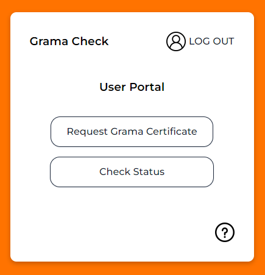
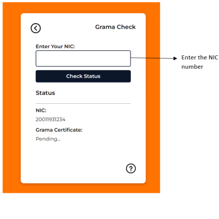
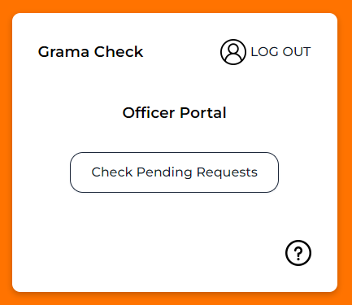
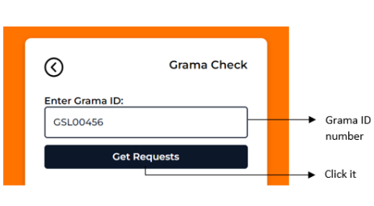
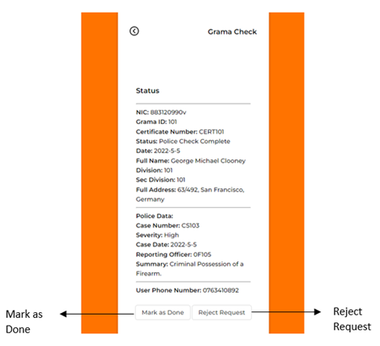

Guide To
Grama Check
Sign Up Page
1. Please open the Grama Check Application.
2. Then Sign-up to the Grama Check Application if you already registered, Log-in to your account.
Home Page
1. There are two type of signing option.
a. Sign in as a User
b. Sign in as Grama Officer
2. If you are customer sign as the 1st option or if you are grama officer sign as the 2nd option.
Sign-in as User
1. When you go to the User Portal page. User can request the Grama Certificate using the Option 1 button. Or if you already requested the Grama Certificate you can check the status of progress using the Option 2 button.
Request Grama Certificate
1. When you go to the Request Certificate page you have to enter your NIC number and Address.
2. And then click on the Submit button.
3. After Submitting it, you can go to the back page (User Portal Page) and check the status of your record.
Check User Status
1. In this page user can check his/her process of the Police Clearance and the Grama Certificate.
Sign Up Page
1. Please open the Grama Check Application.
2. Then Sign-up to the Grama Check Application if you already registered, Log-in to your account.
Home Page
1. There are two type of signing option.
a. Sign in as a User
b. Sign in as Grama Officer
2. If you are customer sign as the 1st option or if you are grama officer sign as the 2nd option.

Pending Requests
1. Click on the Check Pending Requests button.
2. Then you can see the pending requests of customers.
3. If you Click on the more information. You can see every single detail of that relevant person.

4. After you check the details and the police clearance report about that person, if that person is
not qualified (if that person has a criminal record or any other issues) you can reject his/her
certificate using the Reject Request button. Then he will get the message that his/her certification
process is rejected.
5. Or else If that person is qualified to get the certificate you can Click on the Mark as Done.
Then that relevant person gets his/her certificate.